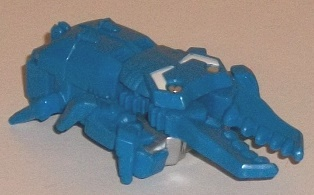
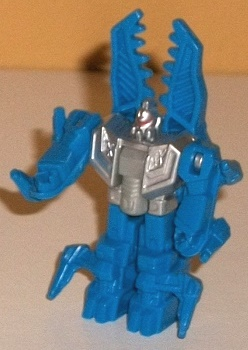
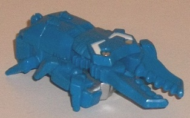
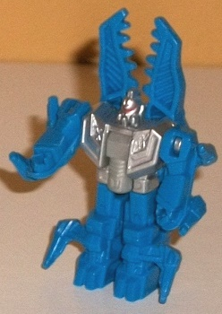
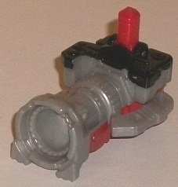
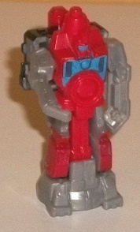
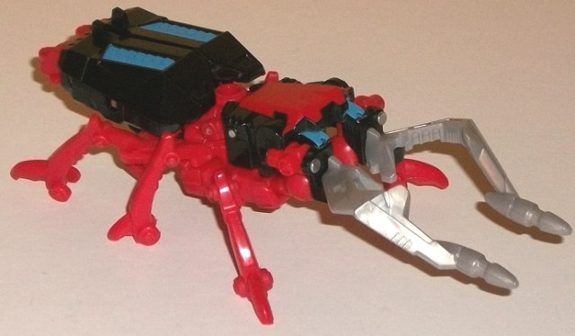
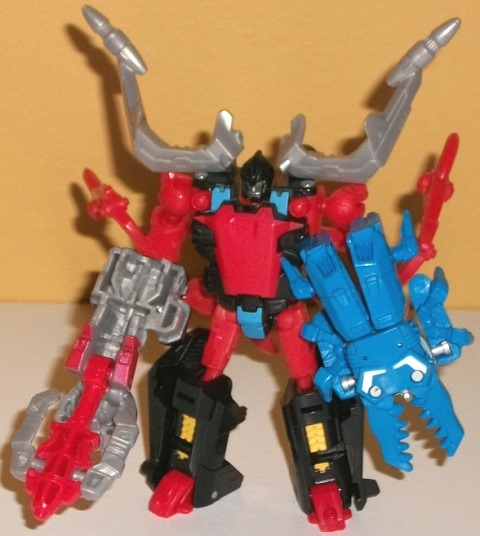

 
Allegiance : Waruder
Size : Legends partner
Difficulty of Transformations : Very Easy
Color Scheme : Moderately light sky blue, silver, and some white, light milky gray, and red
Individual Rating : 4.9
(NOTE: Because this set is composed of repaints,
this is not a full-blown review. This mainly covers any changes made to
the set and the color scheme, and merely compares it to the original versions
of these molds. For a review on Generations Skrapnel & Reflector--
the molds used for Zaptrap & Spy-Eye, respectively-- go
here
.
For a review on Generations "Thrilling 30" Chop Shop-- the mold used for
Beet-Chit-- go
here
.)
 Beet-Chit
Beet-Chit


Allegiance
: Waruder
Size
: Legends partner
Difficulty of Transformations
: Very
Easy
Color Scheme
: Moderately light sky
blue, silver, and some white, light milky gray, and red
Individual Rating
: 4.9
First off, just as a
side note I hate Beet-Chit's name. (Seriously, just say it. Sounds like
you're cursing.) I know it follows the Diaclone Japanese Waruder name conventions
to some extent, but it's still just a horrible name. Regardless, Beet-Chit
contrasts against the rest of this set by being almost entirely blue, with
the only red being on his optic strip. Unfortunately, particularly in beast
mode, there's little paint beyond this blue-- but luckily, it's a really
nice shade of blue and looks good almost by itself-- certainly on a toy
that's this small. There's at least a bit of white in beast mode, though,
used on the little details at the back of the head-- they look good, but
I wish there were a few more of them. In robot mode there's a good amount
of silver paint on the chest and head, which goes well with the blue as
a secondary color and also looks pretty nice. Because of the plastic type,
the handle in the middle of the chest is just a bland light gray, but there's
not much of it.
No mold changes have
been made to Beet-Chit.
 Spy-Eye
Spy-Eye


Allegiance:
Diaclone
Size
: Legends partner
Difficulty of Transformations
: Very
Easy
Color Scheme
: Light milky gray,
red, black, and some light sky blue
Individual Rating
: 5.1
Spy-Eye is the odd 'bot
out here, not a part of the Waruder duo but a sort of "partner robot" to
the Diaclone toys in the other attendee exclusive sets for BotCon 2015.
That said, his color scheme is mostly a "side-effect" of Zaptrap's. The
light gray is in completely the same places as on Generations Reflector,
and the black paint is MOSTLY in the same places-- that is, on the top
rear section of the camera mode. However, the black paint ISN'T on the
camera lens unlike on Reflector, which is a bit of a downer, and quite
honestly the only reason his rating is lower than Reflector's-- there's
too much unbroken gray in camera mode. The purple paint and plastic from
Reflector has been replaced with a normal red plastic, which contrasts
just as well with the black and gray on Spy-Eye. The neat little extra
bit that helps this color scheme pop more is the bit of light sky blue
on Spy-Eye's chest and optic strip, which contrasts VERY well against the
red plastic it's surrounded by. I wish it was used on the faux camera lens
on the robot chest, though, just to give the toy a few more paint apps
to make it look more "premium", like most FunPub toys.
No mold changes have
been made to Spy-Eye.
 Zaptrap
Zaptrap


Allegiance
: Waruder
Size
: Legend
Difficulty of Transformation
: Easy
Color Scheme
: Black, red, and some
light milky gray, light sky blue, silver, and chalky orangish yellow
Individual Rating
: 9.2
Zaptrap is based off
of
G1 Shrapnel's
original release in the
Diaclone line before Transformers ever existed. As you can see, the main
difference here is that Skrapnel's purple has been replaced with a fairly
straightforward shade of red, along with some red paint on the robot chest
to boot. The black and light milky gray are in the same places as they
are on the original Generations Skrapnel figure. As a whole, I think the
red contrasts against the black slightly better than the purple on Skrapnel,
though with the gray-- and the black in particular-- being in the same
exact places as on Skrapnel, I can see why FunPub made this the "Primus
Pregistrant-Only" exclusive-- its appeal is probably a bit more limited
than the "complete" redecos for BotCon 2015. That said, the colors ARE
accurate to the source material, so I can hardly blame them for keeping
the black and gray the same. What helps this color scheme pop a little
more is the pretty nice shade of light sky blue used on the insect abdomen,
robot shoulders, and robot pelvis-- it contrasts excellently with both
the red and black, and provides a nice "foil" color to all the red. There's
also a touch of orangish yellow paint on the lower leg details in robot
mode, which contrasts against the black well and also complements the red
nicely, andsome silver paint on the robot face.
No mold changes have
been made to Zaptrap.
This 3-pack is probably
the most easily forgettable/uninspiring of the BotCon 2015 exclusives.
I understand the homages, but I get why this was only given out 1 per Primus
package Preregistrant, and as such commands a fairly heavy price on the
secondary market. The colors chosen are pretty decent, but Spy-Eye and
Zaptrap look a bit too similar to Reflector and Skrapnel. This would have
been more forgivable if this was a regular-priced store exclusive, but
as BotCon exclusives I would've expected a bit more, even given the source
material. Beet-Chit is certainly different enough and has a nice base color,
but could've used a few more paint apps. In general these molds have decent
paint jobs, but just not as memorable or unique as most BotCon exclusives.
Reviews by Beastbot